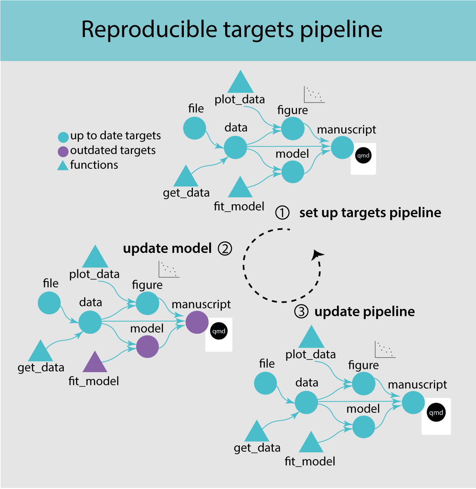
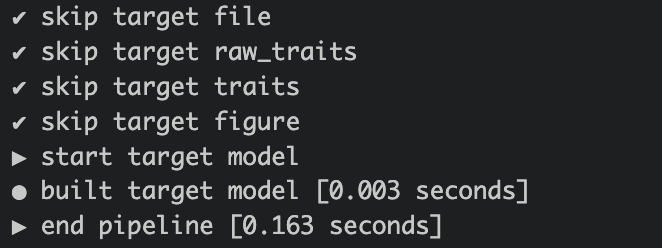

3 Getting started with targets
In this chapter, you will
- learn the basic targets workflow
- build your own targets pipeline
3.1 Introduction to targets
Targets is a pipeline tool, which coordinates the different steps in data science in R. It manages the workflow, takes care of dependencies in the code and keeps track of outdated objects. Targets takes care of the cash.
A targets pipeline consists of different steps, such as importing data, running an analysis or making a figure (Figure 3.1) (1). Each step in the pipeline is a target and can for example be a data frame, a model or a figure. A target is basically an R object and is created by a function. A pipeline has a main script that puts all the pieces of code together and takes care of dependencies and keeping track of changes.
This concept should sound familiar to you after reading the previous chapter on abstraction.
Definitions
- pipeline tool - coordinates different steps of data science
- target - an R object in memory
- function - self contained code that accomplish a specific task
When updating and rerunning one part of the code, targets will skip parts where the upstream code has not changed and are therefore still up to date (Figure 3.1) (2). Targets will only rerun the code that is outdated and ensures that your results always match the underlying code and maintains a reproducible workflow (3). It avoids unnecessary repetition and can saves costly running time.
When is targets useful?
When the code has a long runtime because it is slow or complex. Targets avoids running code that up to date and allows for parallel processing.
When the workflow has interconnected tasks with dependencies
3.2 The targets pipeline
3.2.1 The file structure
A target workflow has a specific file structure including R code, functions, qmd files, data and a _targets.R file (Figure 3.2). The _targets.R file is mandatory and the most important file defining the targets pipeline. This file lives at the root of the R project folder.

An R project has many other files and it is recommended to keep code and data files in separate folders to keep the repository tidy. It is common to have one or several scripts that contain custom user-defined functions. These scripts should be stored in one folder. In this example we will call the folder R: R/functions.R.
To set up this file structure in an RStudio project, use the use_targets() function, which creates an initial _targets.R script with comments to help you populate the script. Note that it also creates a couple of other files, one of which is called run.R. This is a helper script to run the pipeline and will be explained later.
Exercise
Go to the targets-workflow-svalbard Rstudio project and load the targets library library(targets). Then start to set up a targets pipeline by using the use_targets() function.
3.2.2 The _target.R file
The _targets.R file is the main script and configures and defines the pipeline. This file is mandatory and without it the targets pipeline will not work. When using the use_targets() function, it sets up the basic structure and comments to help fill out the rest (see below 👇) .
# Created by use_targets().
# Follow the comments below to fill in this target script.
# Then follow the manual to check and run the pipeline:
# https://books.ropensci.org/targets/walkthrough.html#inspect-the-pipeline
# Load packages required to define the pipeline:
library(targets)
# library(tarchetypes) # Load other packages as needed.
# Set target options:
tar_option_set(
packages = c("tibble") # packages that your targets need to run
# format = "qs", # Optionally set the default storage format. qs is fast.
#
# For distributed computing in tar_make(), supply a {crew} controller
# as discussed at https://books.ropensci.org/targets/crew.html.
# Choose a controller that suits your needs. For example, the following
# sets a controller with 2 workers which will run as local R processes:
#
# controller = crew::crew_controller_local(workers = 2)
#
# Alternatively, if you want workers to run on a high-performance computing
# cluster, select a controller from the {crew.cluster} package. The following
# example is a controller for Sun Grid Engine (SGE).
#
# controller = crew.cluster::crew_controller_sge(
# workers = 50,
# # Many clusters install R as an environment module, and you can load it
# # with the script_lines argument. To select a specific verison of R,
# # you may need to include a version string, e.g. "module load R/4.3.0".
# # Check with your system administrator if you are unsure.
# script_lines = "module load R"
# )
#
# Set other options as needed.
)
# tar_make_clustermq() is an older (pre-{crew}) way to do distributed computing
# in {targets}, and its configuration for your machine is below.
options(clustermq.scheduler = "multicore")
# tar_make_future() is an older (pre-{crew}) way to do distributed computing
# in {targets}, and its configuration for your machine is below.
# Install packages {{future}}, {{future.callr}}, and {{future.batchtools}} to allow use_targets() to configure tar_make_future() options.
# Run the R scripts in the R/ folder with your custom functions:
tar_source()
# source("other_functions.R") # Source other scripts as needed.
# Replace the target list below with your own:
list(
tar_target(
name = data,
command = tibble(x = rnorm(100), y = rnorm(100))
# format = "feather" # efficient storage for large data frames
),
tar_target(
name = model,
command = coefficients(lm(y ~ x, data = data))
)
)
Exercise
Open the _targets.R in your repo and have a look at your _targets.R file.
The _targets.R file has three main components. Note that the file also contains other options which are optional. We will discuss the three main component step-by-step.
-
tar_option_set()sets all options such as load necessary packages or defining the output format. The argumentpackageshould have a list of all the required packages that are needed to run the pipeline. Note thattargetsneeds to be loaded first and outside this function, otherwise the pipeline will not work.
The tarchetypes package contains helper functions and needs to be loaded if your pipeline contains a quarto file (see next chapter). Packages that are only used in a quarto file can be loaded directly in there and do not need to be loaded in the _targets.R file.
The argument format let’s you define default storage format.
# Load packages required to define the pipeline:
library(targets)
# library(tarchetypes) # Load other packages as needed.
# Set target options:
tar_option_set(
packages = c("tibble"), # packages that your targets need to run
format = "rds" # default storage format
# Set other options as needed.
)- The function
tar_source()will source all the R scripts in theR/folder.
# Run the R scripts in the R/ folder with your custom functions:
tar_source()- The last section makes a list of targets which is the pipeline. Each target is a step in the pipeline, for example importing data, run an analysis or make a figure and looks like a normal R object (e.g. tibble, vector, figure). Each target is declared by the
tar_target()function and separated by a comma. Thetar_target()needs two arguments:namedefines the target name andcommandthe code to produce the target. Usually the command is calling a custom function.
Here is a target that uses the function fit_model() that was created in the previous chapter to run a linear regression.
# fit model for plant height
list(
tar_target(name = model,
command = fit_model(data))
)Each target should have a unique name that can be called downstream in the pipeline. The order of the targets does not matter. The pipeline will figure out which targets depends on each other and run them in the right order.
Once the pipeline has run, the targets are stored.
Targets names
Targets names must be unique (no duplicates), should not start with a dot and the name should be meaningful (do not use my_variable).
Data files are special targets, because they also need the argument format to declare that this target is a file. Each time the pipeline is run, targetes will check if the file has been changed and if this is the case automatically import the data again the next time the pipeline is run.
list(
tar_target(name = file,
command = "data/PFTC4_Svalbard_2018_Gradient_Traits.csv",
format = "file")
)
How many targets should I make?
A target should do one thing only (e.g. make a figure) and if a functions gets too long, it can be split into nested sub-functions to make the code readable and easier to maintain. Keep the number of targets manageable, which means keep a balance between the amount of code that goes in one target and the number of targets.
3.2.3 Populate the _target.R file
Now we can populate the _targets.R file. We need to set the options, source the custom functions, and define the pipeline.
First, we need to add all R packages to the tar_option_set() function in the _targets.R file that are needed to run the pipeline.
Exercise
Add all the necessary R packages in tar_option_set() in the _targets.R file that are needed to run the pipeline.
# Set target options:
tar_option_set(
packages = c("tidyverse") # packages that your targets need to run
)The next step is to source all the functions. The tar_source() function in the _targets.R file already does this. But we are missing one last function to make the figure.
Exercise
Write a function that makes a figure showing leaf area in both gradients.
The last step is to set up the targets pipeline.
Exercise
Define the data file
Add the dataset as data file in the _targets.R file.
list(
tar_target(name = file,
command = path,
format = "file")
)
Exercise
Add other targets to the pipeline
Add four more targets to the pipeline that
import the data
clean the data
run a linear regression
and make a figure
The last three targets are calling custom functions from the functions.R file. The targets are separated by a comma.
list(
# data file
tar_target(name = file,
command = path,
format = "file"),
# import data
tar_target(name = target1,
command = function1),
# clean data
tar_target(name = target2,
command = function2),
...
)Well done, you have just set up your first target pipeline. Have a treat 🥕!
3.2.4 Run the pipeline
Now we are ready to run the pipeline. For this open the run.R script and run the tar_make() function. This function looks for the _targets.R in the working directory and runs the pipeline.
When running the pipeline for the first time you will see a list of all the targets that are built (Figure 3.3). This is indicated by start target and build target.

Exercise
Open the run.R script and run the pipeline. Hopefully, everything will run smoothly 🤞! If not check out the Trouble shooting section below.
Well done you have run your first targets pipeline. The tar_visnetwork() function shows the dependency graph of the pipeline and is a nice way of vizualizing the pipeline. Circles are targets, triangles functions, and the colour indicates if the targets are up to date or not.

Exercise
Run tar_visnetwork() to visualize your pipeline.
Once the pipeline has run, it will always skip the targets that have not changed and are up to date and only run the once that need updating. In the long run this will save a lot of computational time and is one of the big advantages of using targets pipelines.

Exercise
Change something in your pipeline. For example filter for a different species: bistorta vivipara. Save the script and run tar_visnetwork() to visualize which object are not up to date now.
Rerun the pipeline using tar_make().
And run tar_visnetwork() again to check if everything is up to date again.
3.2.5 Load targets
Each target can be loaded using tar_load() and the pipeline does not need rerunning each time before accessing the targets. This is a huge advantage of the targets pipeline and can save a lot of time.
tar_load(model)To access all the targets at once use tar_load_everything(). In tar_load() you can also use tidy select commands to load specific targets, e.g. tar_load(starts_with("y"))
Exercise
Use tar_load() to load the target traits.
Run str(traits) to display the structure of the object traits.
Do it step-by-step
Targets plans can become huge and complex. Start small, create a few targets and functions and make the plan running. Then add new code in small steps and check regularly if the plan is still working This will help to understand and solve errors (see trouble shooting section).

3.3 Trouble shooting
3.3.1 Locate problem
Error messages in targets can be hard to understand and will look something like this:

You can see that the pipeline broke when running the target model. To learn more about the problem run the command targets::tar_meta(fields = error, complete_only = TRUE).

The R output now gives some more information about the problem. Here the argument response is missing.
If an error is difficult to understand use tar_load() to load one specific target or tar_load_everything() to load all targets. Then you can try to run different parts of the script to test where the code breaks.
Best practice is to run the pipeline regularly, which makes it easier locate where the error occurred.
3.3.2 Object not found
A common error is to call a target that does not exist. When running the pipeline this error will appear (Figure 3.9). This is usually if the name is spelled wrong or when using an old name.

3.3.3 Duplicate target
Another common mistake is to use the same name for two different targets (Figure 3.10). This is common when copy pasting code. Rename one of the objects and the problem is solved.

3.4 Resources
- The target manual contains everything you need to know
- Here is a large and working target plan
- A paper about pipelines: Brousil, M. R., Filazzola, A., Meyer, M. F., Sharma, S., & Hampton, S. E. (2023). Improving ecological data science with workflow management software. Methods in Ecology and Evolution. https://doi.org/10.1111/2041-210X.14113
- Here is a short introduction video